开始使用你的 R2
触屏设置 · 像素眼镜 · 按键会话
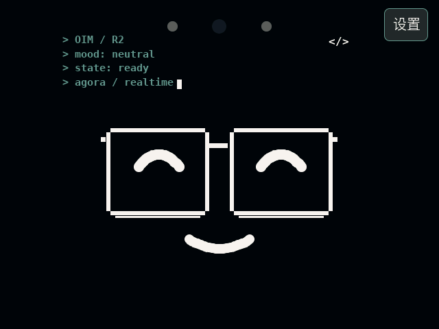
state: ready，表示设备已就绪，可以按会话键开始对话。适用于长按按钮可开关机、带“设置 → 配网 / 恢复出厂”入口的 R2 中文版本； 图中热点名、网络名及配对码均为示例，以设备实际显示为准。
01 / 首次使用
准备一部手机，以及可正常上网的 2.4 GHz Wi-Fi 名称和密码。
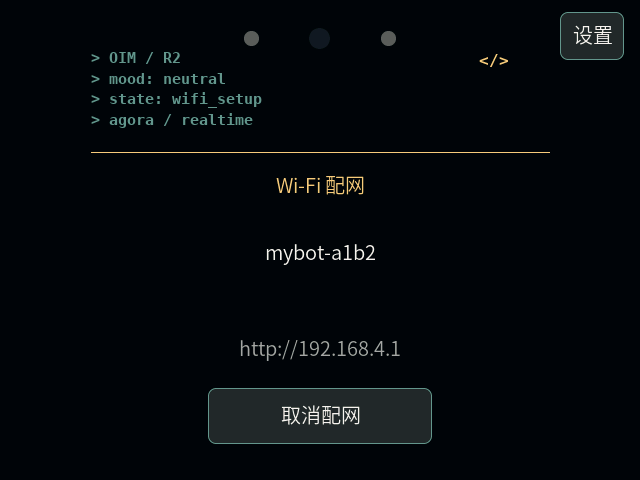
mybot-xxxx 热点；热点没有密码。http://192.168.4.1。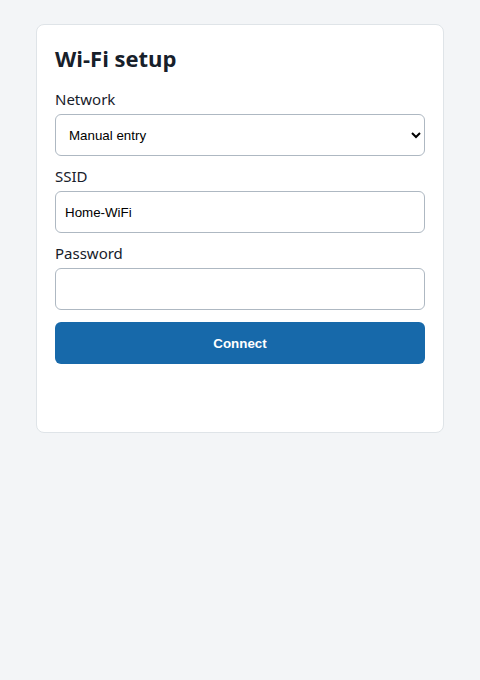
| 网页字段 | 怎么填写 |
|---|---|
| Network | 从扫描结果选择目标网络；没有结果时，可直接填写 SSID。 |
| SSID / Password | 目标 Wi-Fi 的名称 / 密码，注意大小写。 |
| Connect | 开始连接；失败时检查名称与密码，修改后再次点击。 |
手机提示热点“无法上网”时，选择继续保持连接。该页面用于设置设备 Wi-Fi， 与账号配对使用的网页控制台是两个不同入口。
02 / 连接账号与智能体
网络连接成功后，设备会连接服务。未绑定的设备会显示并播报配对码。
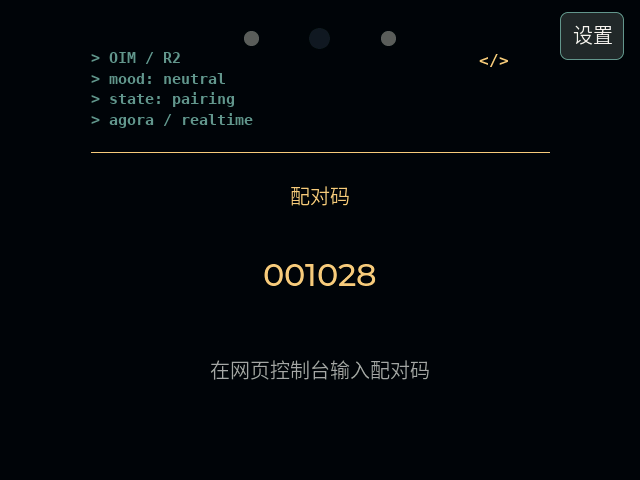
001028。配对码固定六位，开头的 0 也需要输入。state: ready。使用屏幕当前显示的配对码。如果代码更新，请改用新码；获取代码暂时失败时，设备会重试。 如果一直停留在“连接服务中”或“等待配对”，先确认目标 Wi-Fi 可以访问互联网。
没有控制台地址或账号时，请先向设备提供方索取，并确认与设备使用的服务版本一致。
网页控制台的具体菜单位置以当前服务页面为准；
不要在 192.168.4.1 配网页输入账号配对码。
03 / 按键与屏幕
state: ready 时，开始会话。长按同一按钮：开机或关机。开关机由当前板级电源硬件处理，长按时长以设备硬件为准。 日常会话操作请短按并松手；恢复出厂使用触屏设置。
开启会话后，等待连接完成再说话。屏幕会短暂切换表情，随后显示服务返回的聆听、思考或回复状态。
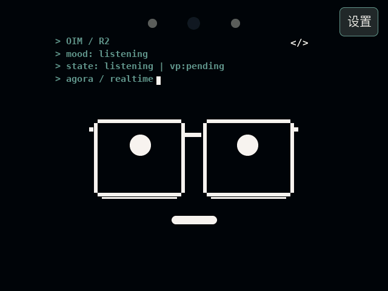
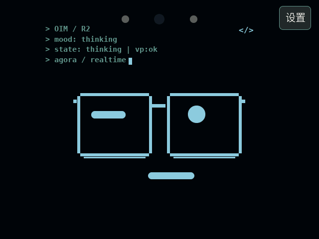
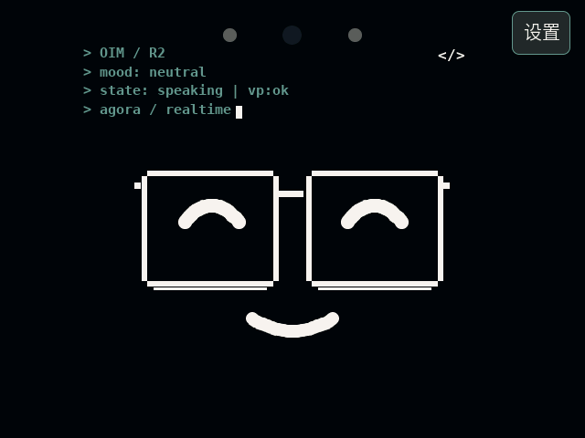
| 第三行状态 | 含义与操作 |
|---|---|
ready | 已经就绪，可以短按开始会话。 |
listening | 正在聆听，可以向设备说话。 |
thinking | 智能体正在思考，等待回复。 |
speaking | 智能体正在回复。 |
in_conversation | 处于会话中，当前没有更具体的阶段提示。 |
vp:pending | 本次会话尚未确认声纹注册成功；不等于注册失败，也不妨碍普通对话。 |
vp:ok | 本次会话已收到声纹注册成功通知。 |
mood 是当前表情名称，
第三行 state 才是实际工作状态。思考时间较长时，表情会变化，但状态仍是 thinking。配网、配对及其他非会话就绪状态中，短按不会开聊。 长按开机后，先松开按钮，再用短按开始会话。
04 / 更换网络
待机、会话中或网络异常时，都可从右上角“设置”进入配网。
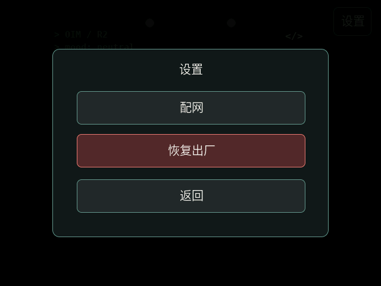
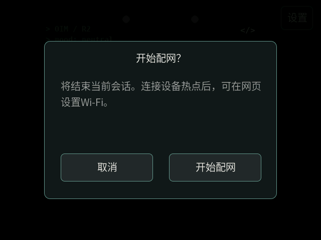
ready 再开聊。进入“正在保存Wi-Fi”前，可以取消配网。即使已经点击网页 Connect， 只要还在尝试连接、尚未开始保存，也可以取消。
| 取消时的情况 | 设备接下来会做什么 |
|---|---|
| 已有可用的旧网络 | 关闭配网，尝试一次旧网络；成功后恢复服务。 |
| 没有旧网络或连接失败 | 显示“配网失败”，轻触“重新配网”，或从设置选择恢复出厂。 |
| 已经开始保存 Wi-Fi | 不再接受取消，请等待本次设置完成。 |
触屏操作请单指按下并在同一按钮内松开。拖动或多指操作不会确认，打开一层页面后， 需要重新轻触下一层按钮。
05 / 重新设置设备
需要清除本机配置时，依次轻触“设置 → 恢复出厂 → 确认恢复”。
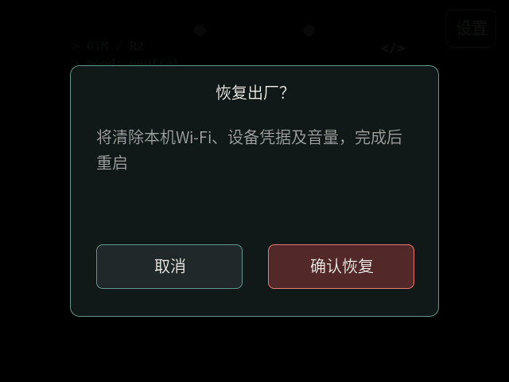
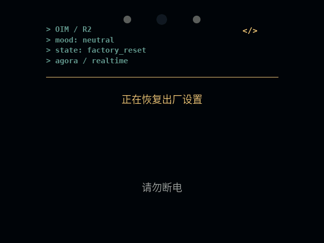
| 项目 | 恢复出厂后的结果 |
|---|---|
| 本机 Wi-Fi | 清除；重启后需要重新配网。 |
| 本机设备凭据 | 清除；联网后重新完成设备鉴权。 |
| 保存的音量 | 清除；恢复为固件默认音量。 |
| 设备 ID、已烧录固件 | 保留，不会更换设备身份或回退固件。 |
| 服务器上的账号 / 智能体绑定 | 保留；重新联网后继续按服务端绑定状态工作。 |
轻触失败页的“重试”。设备不会自行反复重启，也不会直接回到原会话。 若恢复过程因断电中断，重新上电后可能继续尚未完成的恢复。
06 / 常见问题
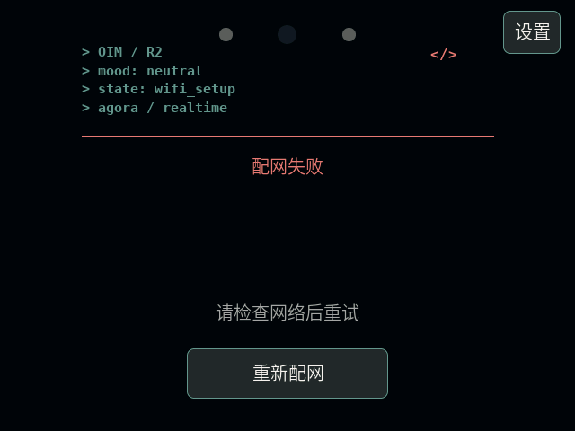
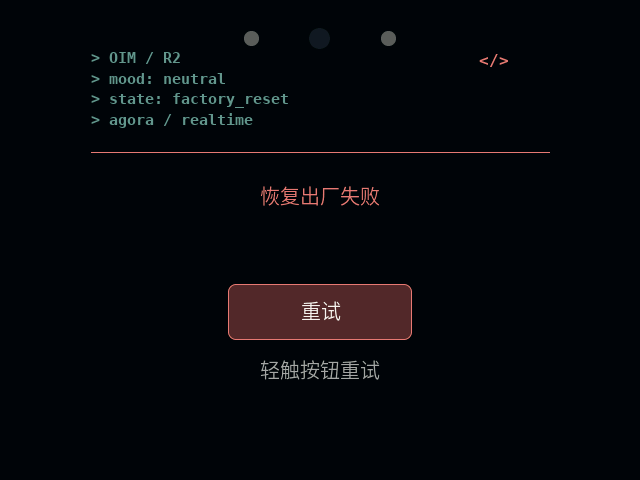
| 现象 | 处理方法 |
|---|---|
| 找不到设备热点 | 已联网待机时不会常开热点。先从“设置 → 配网”确认进入， 再按屏幕显示的名称查找。 |
| 手机没有弹出配网页 | 保持连接设备热点，手动打开 http://192.168.4.1；
手机提示无法上网时，选择保持连接。 |
| 扫描不到目标 Wi-Fi | 在 SSID 手动输入准确名称，确认使用 2.4 GHz 网络。密码区分大小写。 |
| 网页提示连接失败 | 检查 Wi-Fi 名称、密码及路由器网络，修改后重新点击 Connect。 设备进入失败页时可轻触“重新配网”。 |
| 短按按键没有开聊 | 先确认已经完成配对，且屏幕显示 ready。
按下后及时松手，避免长按触发关机。 |
| 显示“触控不可用” | 重启设备后再试；仍提示时，请联系维护人员检查固件与触摸功能。 此时触屏设置不可使用。 |
| 一直连接服务或启动失败 | 先检查 Wi-Fi 是否可上网，再从设置重新配网。 仍无法恢复时，记录屏幕提示并联系维护人员。 |
| 会话期间网络中断 | 本次会话会结束。等待网络恢复且出现 ready 后，
再短按开始，不会自动续接原会话。 |
本手册对应 R2 触屏配网版，版本 1.0 / 2026-10-20。界面图由与固件相同的 UI 渲染代码生成， 不是实机照片；动画以静帧展示。图中示例不代表设备的实际网络、身份或配对码。